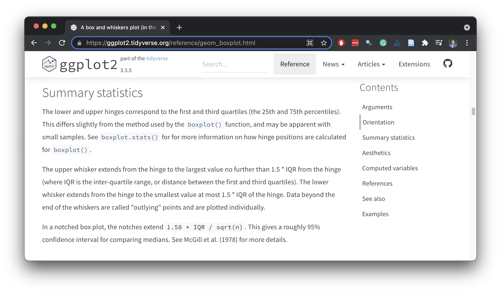
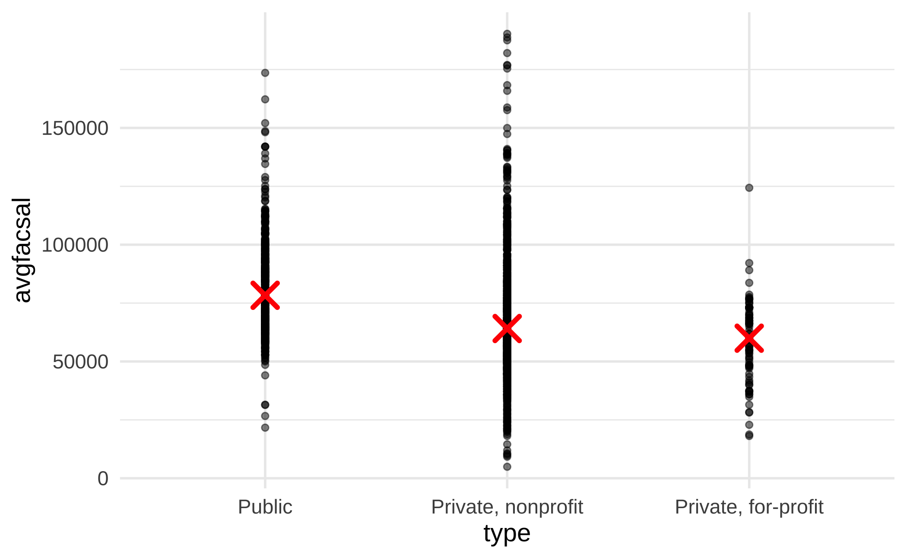
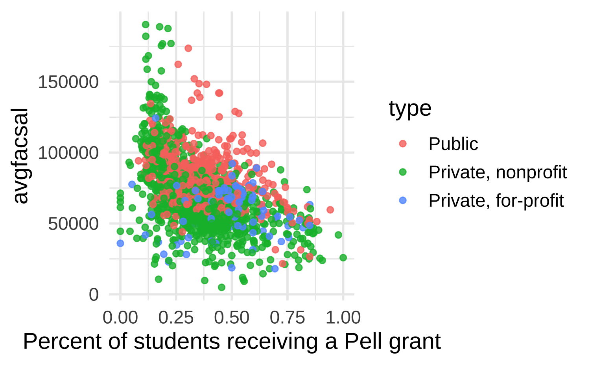
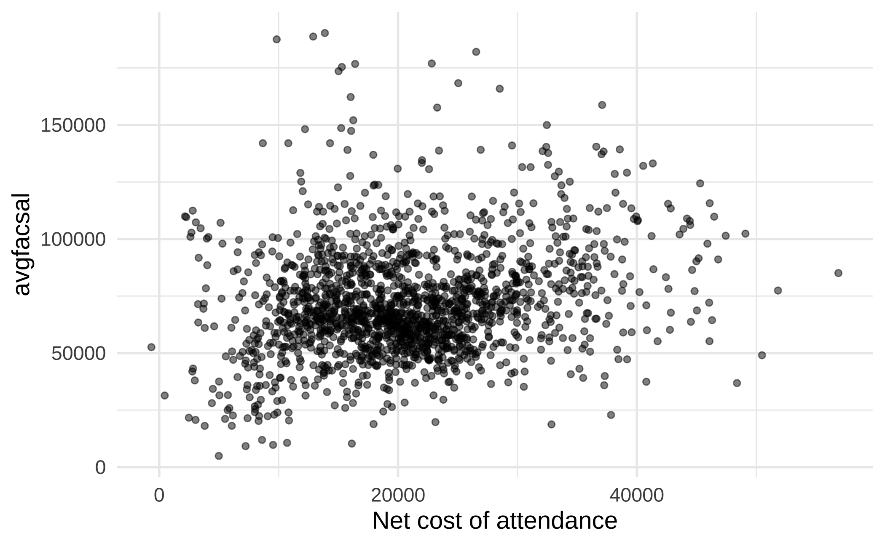
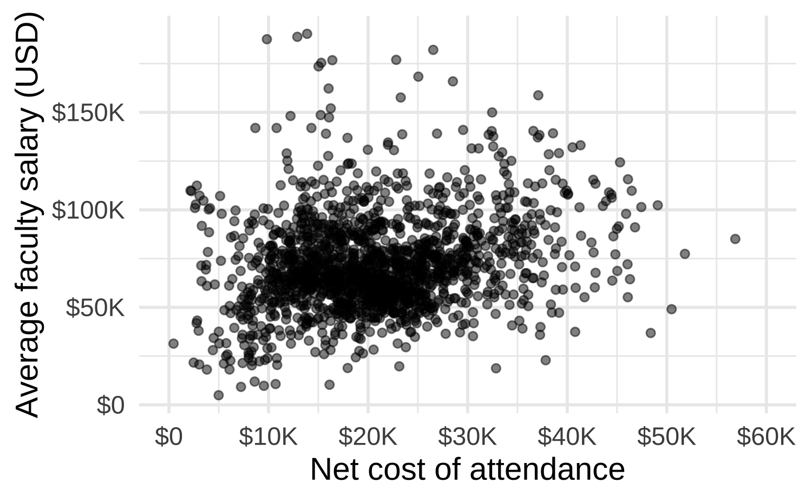
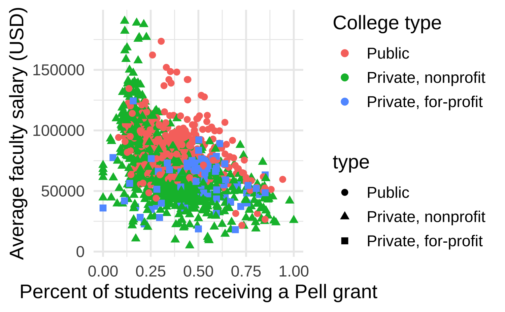

Deep dive: stats + scales + guides
Lecture 5
Cornell University
INFO 3312/5312 - Spring 2023
2/7/23
Project #1
Project #1
- Project description
- Team assignments on Thursday
- Deliverables
- February 16 - proposals for peer review
- February 20 - revised proposals for instructor review
- March 3 - write-up and presentation
Setup
Packages + figures
YAML options
scorecard
Rows: 1,721
Columns: 14
$ unitid <dbl> 100654, 100663, 100706, 100724, 100751, 100830, 100858, 1009…
$ name <chr> "Alabama A & M University", "University of Alabama at Birmin…
$ state <chr> "AL", "AL", "AL", "AL", "AL", "AL", "AL", "AL", "AL", "AL", …
$ type <fct> "Public", "Public", "Public", "Public", "Public", "Public", …
$ admrate <dbl> 0.8965, 0.8060, 0.7711, 0.9888, 0.8039, 0.9555, 0.8507, 0.60…
$ satavg <dbl> 959, 1245, 1300, 938, 1262, 1061, 1302, 1202, 1068, NA, 1101…
$ cost <dbl> 23445, 25542, 24861, 21892, 30016, 20225, 32196, 32514, 3483…
$ netcost <dbl> 15529, 16530, 17208, 19534, 20917, 13678, 24018, 19808, 2050…
$ avgfacsal <dbl> 68391, 102420, 87273, 64746, 93141, 69561, 96498, 62649, 533…
$ pctpell <dbl> 0.7095, 0.3397, 0.2403, 0.7368, 0.1718, 0.4654, 0.1343, 0.22…
$ comprate <dbl> 0.2866, 0.6117, 0.5714, 0.3177, 0.7214, 0.3040, 0.7870, 0.70…
$ firstgen <dbl> 0.3658281, 0.3412237, 0.3101322, 0.3434343, 0.2257127, 0.381…
$ debt <dbl> 15250, 15085, 14000, 17500, 17671, 12000, 17500, 16000, 1425…
$ locale <fct> City, City, City, City, City, City, City, City, City, Suburb…Stats
Stats < > geoms
- Statistical transformation (stat) transforms the data, typically by summarizing
- Many of ggplot2’s stats are used behind the scenes to generate many important geoms
stat |
geom |
|---|---|
stat_bin() |
geom_bar(), geom_freqpoly(), geom_histogram() |
stat_bin2d() |
geom_bin2d() |
stat_bindot() |
geom_dotplot() |
stat_binhex() |
geom_hex() |
stat_boxplot() |
geom_boxplot() |
stat_contour() |
geom_contour() |
stat_quantile() |
geom_quantile() |
stat_smooth() |
geom_smooth() |
stat_sum() |
geom_count() |
stat_boxplot()
Layering with stats
Alternate: layering with stats

Statistical transformations
What can you say about the distribution of average faculty salaries from the following QQ plot?
Scales
What is a scale?
Each scale is a function from a region in data space (the domain of the scale) to a region in aesthetic space (the range of the scale)
The axis or legend is the inverse function: it allows you to convert visual properties back to data
Scale specification
Every aesthetic in your plot is associated with exactly one scale:
Anatomy of a scale function
scale_A_B()
- Always starts with
scale A: Name of the primary aesthetic (e.g.,color,shape,x)B: Name of the scale (e.g.,continuous,discrete,brewer)
Guess the output
What will the x-axis label of the following plot say?
01:00
“Address” messages
Scale for x is already present.
Adding another scale for x, which will replace the existing scale.
Guess the output
What happens if you pair a discrete variable with a continuous scale? What happens if you pair a continuous variable with a discrete scale? Answer in the context of the following plots.
03:00
Transformations
When working with continuous data, the default is to map linearly from the data space onto the aesthetic space, but this scale can be transformed
Continuous scale transformations
| Name | Function \(f(x)\) | Inverse \(f^{-1}(y)\) |
|---|---|---|
| asn | \(\tanh^{-1}(x)\) | \(\tanh(y)\) |
| exp | \(e ^ x\) | \(\log(y)\) |
| identity | \(x\) | \(y\) |
| log | \(\log(x)\) | \(e ^ y\) |
| log10 | \(\log_{10}(x)\) | \(10 ^ y\) |
| log2 | \(\log_2(x)\) | \(2 ^ y\) |
| logit | \(\log(\frac{x}{1 - x})\) | \(\frac{1}{1 + e(y)}\) |
| pow10 | \(10^x\) | \(\log_{10}(y)\) |
| probit | \(\Phi(x)\) | \(\Phi^{-1}(y)\) |
| reciprocal | \(x^{-1}\) | \(y^{-1}\) |
| reverse | \(-x\) | \(-y\) |
| sqrt | \(x^{1/2}\) | \(y ^ 2\) |
Convenience functions for transformations


Scale transform vs. data transform
How are the following two plots different, how are they similar? What does this say about how scale transformations work.
02:00
Guides
What is a guide?
Guides are legends and axes:

Source: ggplot2: Elegant Graphics for Data Analysis, Chp 15.
Customizing axes
Customizing axes
Why does 60000 not appear on the x-axis?
Customizing axes
Customizing axes
Customizing axes
Customizing axes
Customizing axes
ggplot(scorecard, aes(x = netcost, y = avgfacsal)) +
geom_point(alpha = 0.5) +
scale_x_continuous(
name = "Net cost of attendance",
breaks = seq(from = 0, to = 60000, by = 10000),
limits = c(0, 60000),
labels = label_dollar(scale_cut = cut_short_scale())
) +
scale_y_continuous(
name = "Average faculty salary (USD)",
labels = label_dollar(scale_cut = cut_short_scale())
)
Aside: storing a plot
Customizing axis and legend labels with scale_*()
Customizing axis and legend labels with labs()
Splitting legend labels
